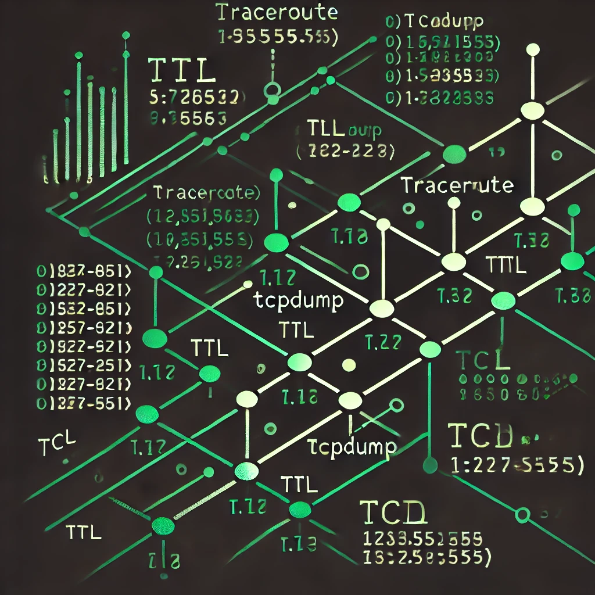
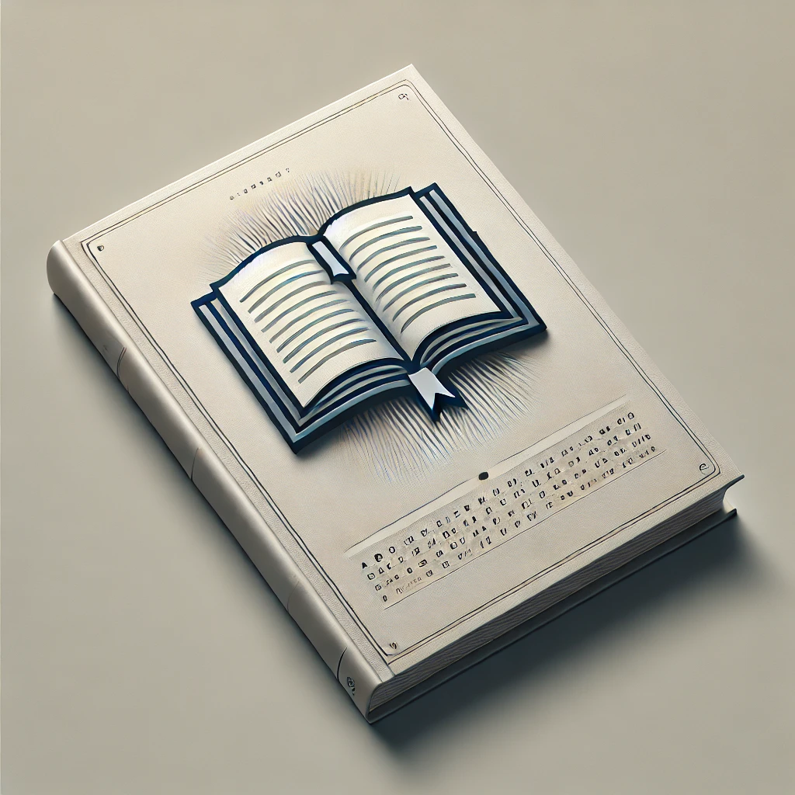

Projects

UNIX Shell Clone
- Designed and Implemented a Unix-like shell in C similar to bash.
- Utilized low-level system calls (read, write, fork, exec, and pipe) for efficient process management and I/O operations, ensuring robust and performany shell functionality.
- Demonstrated proficiency in system-level programming by successfully integrating dynamic prompts, directory navigation, process launching, background/foreground job control, pipelining, and standard I/O redirection.

Traceroute Analysis Tool
- Implemented a Python-based tool to parse tcpdump trace files for network path analysis.
- Extracted hop-by-hop router IP addresses and calculated RTTs using ICMP response analysis.
- Leveraged Python to parse and correlate packet identifiers, TTLs, and timestamps for accurate network path mapping, showcasing proficiency in network protocol analysis, specifically TCP/IP and ICMP handling.

Vocabulary Expansion App
- Developed a GUI app in Java that successfully integrated the Randon Word API with the Free Dictionary API to display a randomly generated term along with its definition and example.
- Utilized JavaFX, JSON, GSON, Git, and RESTful JSON APIs for app development.